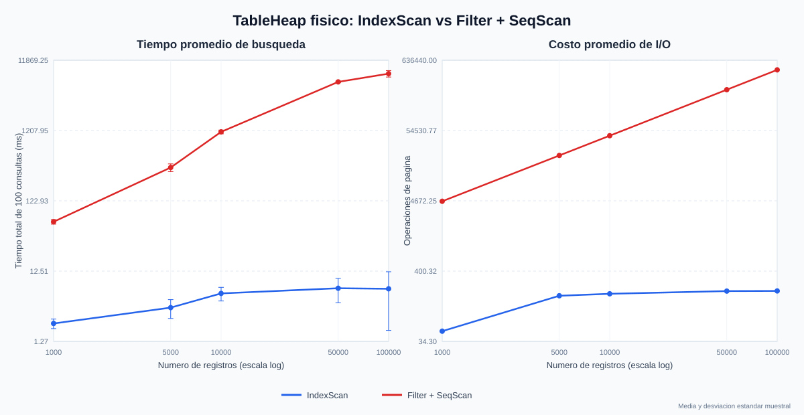

Benchmark reproducible del motor actual
5 repeticiones · 100 consultas · Buffer Pool de 10 frames · media ± desviación estándar

| N | IndexScan (ms) | Filter + SeqScan (ms) | Aceleración | I/O índice | I/O secuencial |
|---|
| 1,000 | 0.436 ± 0.143 | 0.935 ± 0.152 | 2.14x | 5 | 2 |
| 5,000 | 0.726 ± 0.138 | 4.076 ± 1.964 | 5.62x | 75 | 20 |
| 10,000 | 1.087 ± 0.304 | 19.644 ± 4.363 | 18.08x | 101 | 2,000 |
| 50,000 | 1.724 ± 0.940 | 58.961 ± 3.183 | 34.20x | 196 | 9,800 |
| 100,000 | 1.594 ± 0.367 | 128.342 ± 23.612 | 80.50x | 200 | 19,600 |
Resultado: cuando la tabla supera el Buffer Pool, el escaneo secuencial pierde localidad y su hit ratio cae a cero. En 100,000 registros, el índice reduce el costo de I/O 98 veces y el tiempo 80.5 veces, a cambio de aproximadamente 2.30 veces más espacio en disco.